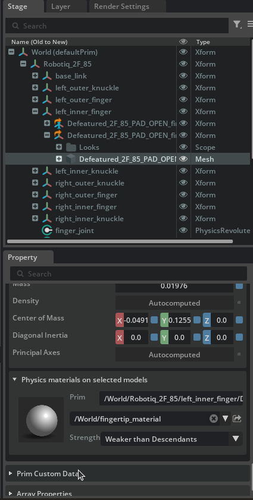
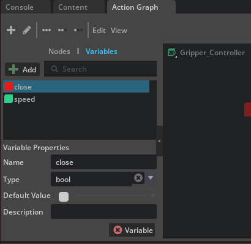
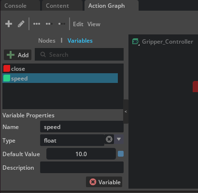
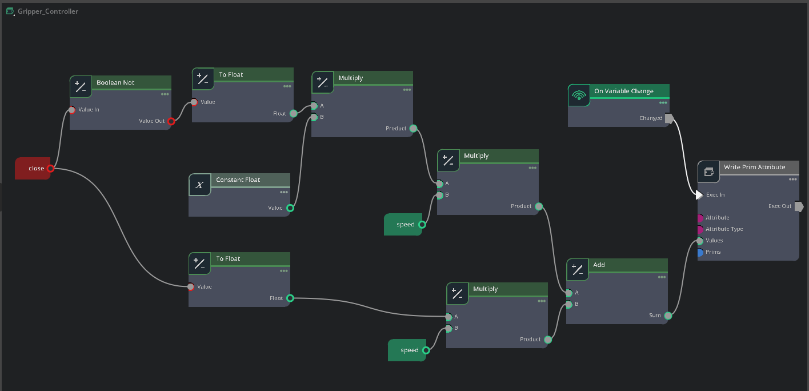
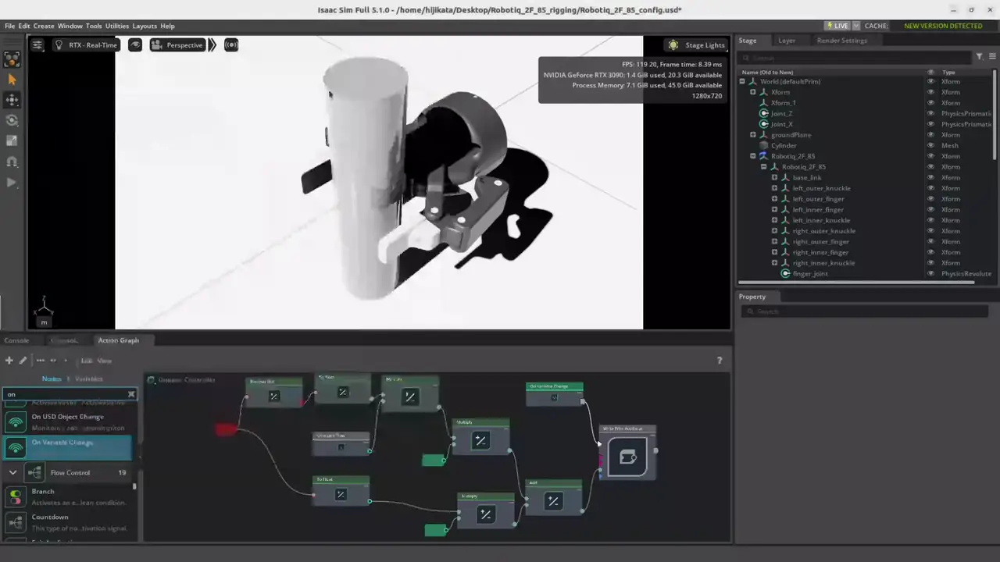

Rigging Closed-Loop Structures¶
Learning Objectives¶
After completing this tutorial, you will have learned:
- Asset editing workflow using USD layers
- Adjusting joints and creating physics materials
- How to break a closed-loop articulation chain
- Configuring joint drives and mimic joints
- Optimizing collision meshes and self-collision
- Building gripper control with OmniGraph
Getting Started¶
Prerequisites¶
- Complete Tutorial 5: Rig a Mobile Robot before starting this tutorial.
Asset Used¶
This tutorial uses the pre-imported Robotiq 2F-85 gripper asset bundled with Isaac Sim:
Estimated Time¶
Approximately 30 minutes.
Overview¶
Mechanisms such as robotic grippers often contain structures where links form closed loops. However, articulations (joint chains) in physics simulation must be expressed as a kinematic tree (tree structure), and loop structures cannot be handled directly.
In this tutorial, you will use the Robotiq 2F-85 parallel gripper to learn how to correctly rig a robot containing closed-loop structures in Isaac Sim. Specifically, you will work through the following steps:
- Asset editing using layers — A non-destructive workflow that preserves the original file
- Joint adjustment — Fixing joint orientations, limits, and setting up friction materials
- Breaking the articulation loop — Converting the closed loop into a tree structure
- Building the test environment — Creating a scene to verify gripper operation
- Configuring joint drives and mimic joints — Adding drive control and mimic linkage to control the gripper fingers
- Optimizing collision meshes — Adjusting collision shapes for grasping
- Saving the configuration — Saving changes to each layer
- Gripper control with OmniGraph — Opening and closing the gripper by toggling a Boolean variable
What is a closed-loop structure?
A closed-loop structure is a mechanism where links and joints are connected in a ring. For example, the two fingers of a parallel gripper are each connected to the body through multiple links, and they form a closed loop when grasping an object at the tip. In contrast, serial robot arms such as the UR10e are connected in a single chain (open loop) from base to end-effector.
Step 1: Asset Editing Using Layers¶
Instead of editing the original USD file directly, you will learn how to edit it non-destructively using layers. With this approach, you can make configuration changes while keeping the original asset file untouched, which makes it easier to update or reuse the asset.
What are USD layers?
USD layers work similarly to layers in Photoshop. By stacking an editing layer on top of a base file, you can add or modify properties without changing the original file at all. If the layer changes are no longer needed, simply removing the layer restores the original state.
1-1. Preparing the Working Directory¶
Since the sample asset is read-only, first copy it to a working folder:
- Create a working folder in any location (e.g., on the desktop) such as
Robotiq_2F_85_rigging -
From the sample asset folder
Samples/Rigging/Gripper/Robotiq 2F-85, download theRobotiq_2F_85_base.usdfile along with theMaterialsandpartsdirectories into your working folder
1-2. Layer Workflow Overview¶
In this step, you will create the following three-file structure:
| File | Role | How to Create |
|---|---|---|
Robotiq_2F_85_base.usd |
Base asset (do not modify) | Already copied from sample |
Robotiq_2F_85_edit.usd |
Layer that records joint adjustments and rigging settings | Created by user |
Robotiq_2F_85_config.usd |
Configuration file that bundles the above for loading | Created by user |
1-3. Creating the Edit Layer¶
Create an edit layer to record rigging settings. Here, you create a new USD file and load the base asset as a sublayer, providing an environment where you can edit without modifying the original file.
- Create a new stage with File > New
- Save it as
Robotiq_2F_85_edit.usdin the working folder using File > Save As - Open the Layer tab (if not visible, open it via Window > Layer)
-
From the Content Browser or file manager, drag and drop
Robotiq_2F_85_base.usdonto the Root Layer in the Layer tab
-
Confirm that the gripper from the base asset is displayed in the Stage
This produces a configuration where _edit.usd (Root Layer) is layered on top of _base.usd (sublayer). All subsequent edits are recorded in _edit.usd, leaving the base asset unchanged.
Layer ordering
USD sublayers are evaluated with higher layers taking priority. In this configuration, opinions from the Root Layer (_edit.usd) override those from the sublayer (_base.usd), so any changes made in _edit.usd override values in _base.usd.
On the other hand, properties that are not overridden in the upper layer use the value from the lower layer in the final result. In other words, if you update meshes or materials in _base.usd, those updates will automatically be reflected as long as you have not modified the same properties in _edit.usd. This is the advantage of the non-destructive editing workflow.
Roles of the Layer tab and the Stage panel
The Layer tab is for adding and reordering layers and for switching the edit target (which layer your edits are recorded into). Selecting prims and editing them through the Properties panel is still done from the Stage panel. If you try to find prims inside the Layer tab, you only see per-layer opinion listings — you cannot edit prims directly from there and it is easy to get lost.
Later steps switch the edit target back and forth between _edit.usd and _config.usd depending on the work, but the flow "activate the target layer in the Layer tab → return to the Stage panel to select a prim" never changes.
1-4. Creating the Configuration File¶
Next, create a configuration file for building a test scene. In this file, you will place the edited gripper asset into the scene as a payload.
- Create a new stage with File > New
- Save it as
Robotiq_2F_85_config.usdin the same working folder using File > Save As - From the Content Browser or file manager, drag and drop
Robotiq_2F_85_edit.usdonto/Worldin the Stage panel -
Rename the prim added to the Stage panel (with a blue arrow icon) to
Robotiq_2F_85Renaming the prim
The added prim's name may default to
Robotiq_2F_85_editbased on the file name. Rename it toRobotiq_2F_85so that it matches the paths used in later steps (such as/World/Robotiq_2F_85/base_link).
With this configuration, simply opening _config.usd will load the contents of the base asset plus the edit layer as the gripper in the scene.
Difference between Payload and Reference
There are two methods to add an asset to the Stage: Payload and Reference.
| Payload | Reference | |
|---|---|---|
| Stage icon | Blue arrow | Orange arrow |
| How to add | Drag and drop | Right-click > Add > Reference |
| Lazy loading | Supported (can be unloaded) | Not supported (always loaded) |
| Main use | Assets placed into a scene | Always-required dependency files |
Payload is a mechanism for temporarily unloading unneeded assets to save memory and improve performance when scenes grow large. You can right-click a prim in the Stage panel and select Unload to unload that asset. Reference is always loaded and cannot be unloaded.
For placing an asset into a scene as in this case, Payload (drag and drop) is the appropriate choice.
Distinction from sublayers
USD provides multiple composition methods including sublayers, references, and payloads. This tutorial uses them as follows:
- Sublayer (
_edit.usd→_base.usd): Shares the same prim hierarchy and overrides properties. Suited for non-destructive asset editing. - Payload (
_config.usd→_edit.usd): Places an external asset as an independent prim in the scene. Suited for scene construction.
Benefits of layer separation
_edit.usd: Stores only robot rigging settings (joints, drives, collision, etc.)_config.usd: Stores test scene elements (ground plane, test objects, etc.)
This separation allows _edit.usd to be reused in other scenes after rigging is complete.
Step 2: Joint Adjustment¶
Working file: Robotiq_2F_85_edit.usd
All changes in this step are rigging settings for the gripper asset. Work with _edit.usd open.
Joints imported from CAD may have their orientation flipped 180 degrees. Fix these so the simulation operates correctly.
2-1. Joint Visualization¶
To check joint orientations, visualize the joint frames in the viewport:
- Click the eye icon at the top of the viewport
- Enable Show By Type > Physics > Joints
This displays gizmos at each joint's position and rotation axis in the viewport.
Reading joint gizmos
When joints are visualized, coordinate axis arrows appear at each joint's position. For revolute joints, the orientation of the rotation axis (typically a specific axis arrow) indicates the joint's positive direction. This positive direction determines which way the link rotates when the joint angle is positive.
2-2. Checking Joint Orientations¶
Select each joint in the Stage panel and check the gizmo axis orientation displayed in the viewport.
In joints imported from CAD, rotation axes may be flipped 180 degrees. A flipped joint has its positive rotation direction pointing opposite to what is expected.
2-3. Fixing Joint Orientations¶
Fix the orientations of flipped joints:
- Select the flipped joint in the Stage panel
Example) finger_joint: you can see it tries to rotate 75 degrees in the opening direction

- In the Rotation section of the Properties panel, apply a 180-degree offset to the X axis of both Rotation 0 and Rotation 1
- Confirm that the gizmo orientation is now correct
Example) finger_joint: now rotates 75 degrees in the closing direction

Joints to fix in this Robotiq 2F-85 asset
For this asset, four joints require orientation fixes: finger_joint, right_outer_knuckle_joint, right_outer_finger_joint, and left_outer_finger_joint. Without fixing these here, the fingers will move opposite to expectations when joint drives are configured in Step 5.
2-4. Setting Joint Limits¶
Set appropriate ranges of motion for each joint (the correct ranges should be set by default):
| Joint | Lower | Upper | Notes |
|---|---|---|---|
left_outer_finger_joint |
0° | 180° | Range of motion of the outer finger link |
right_outer_finger_joint |
0° | 180° | Range of motion of the outer finger link |
finger_joint |
0° | 75° | Main drive joint |
right_outer_knuckle_joint |
0° | 75° | Right outer knuckle |
| Other joints | — | — | No limits (leave default) |
2-5. Creating Fingertip Friction Material¶
To improve the gripper's grasping performance, set up a high-friction material for the fingertips:
- From the menu, select Create > Physics > Physics Material
- Choose Rigid Body Material and rename it to
fingertip_material -
Configure the following parameters:
Parameter Value Description Static Friction 0.8Static friction coefficient (close to rubber) Dynamic Friction 0.8Dynamic friction coefficient Friction Combine Mode MaxFriction combination method (use the larger value) 
-
Apply the created material to the meshes of
right_inner_fingerandleft_inner_finger
Disabling the Instanceable property
When applying the material, if the Instanceable property of the Xform is enabled, you may not be able to set the material individually. In that case, disable Instanceable, then apply the material directly to the mesh component.
Step 3: Breaking the Articulation Loop¶
Working file: Robotiq_2F_85_edit.usd
Changes in this step are rigging settings for the gripper asset. Continue working in _edit.usd.
3-1. Understanding the Problem¶
If you start the simulation in the current state, the following warning appears:

This is because the articulation (joint chain) forms a loop. Articulations in Isaac Sim must be a kinematic tree (tree structure), and closed loops cannot be handled as-is.
Why loops are a problem
The articulation solver in physics simulators is designed assuming a one-way chain (tree structure) from the base link to the end effector. With a loop, the solver cannot correctly resolve joint constraints.
3-2. Criteria for Selecting a Joint to Break¶
To resolve the loop, you exclude one joint from the articulation. The excluded joint is treated as a Maximal Coordinate Joint and given lower solver priority.
Criteria for selecting the optimal joint:
- A position that minimizes the articulation chain length
- A joint that does not require limits, friction, or drive
- A joint with minimal interference with the robot's function
3-3. Steps to Break the Loop¶
For this Robotiq 2F-85 gripper, the inner_knuckle_joint connecting the inner shaft to the body is the optimal candidate.

- Select
left_inner_knuckle_jointin the Stage panel - In the Physics section of the Properties panel, check Exclude From Articulation
- Apply Exclude From Articulation to
right_inner_knuckle_jointin the same way
What is Exclude From Articulation?
Enabling this option excludes the joint from the articulation tree. The joint itself still exists physically, but it is processed by the regular joint solver (Maximal Coordinate) instead of the articulation solver. As a result, the loop is resolved and the simulation operates correctly.
Now, when you run the simulation again, the loop-related warning disappears.
Step 4: Building the Test Environment¶
Working file: Robotiq_2F_85_config.usd
The test environment (ground, cylinder, movement joints, etc.) consists of test-scene-specific elements. Work with _config.usd open.
Build a test scene to verify gripper operation. You will create a structure that allows the gripper to move up/down and forward/backward, then test grasping objects.
4-1. Test Environment Composition¶
The following elements will be added to the scene. They can be built all at once by running the Python script in the next section.
Movement scaffold (structure to move the gripper up/down and forward/backward):
| Element | Role |
|---|---|
Xform (with Rigid Body API) |
Intermediate prim (reference for Z-axis prismatic) |
Xform_1 (with Rigid Body API) |
Prim that holds the gripper (reference for X-axis prismatic) |
| Fixed Joint | Fixes World → Xform |
Prismatic Joint Joint_Z (Z axis) |
Xform → Xform_1 (vertical movement) |
Prismatic Joint Joint_X (X axis) |
Xform_1 → base_link (horizontal movement) |
Drive parameters for prismatic joints:
| Parameter | Value | Description |
|---|---|---|
| Maximum Joint Velocity | 5.0 |
Maximum joint velocity |
| Joint Limits | [0, 1] |
Range of motion (meters) |
| Damping | 10,000 |
Damping coefficient |
| Stiffness | 10,000 |
Stiffness coefficient |
Scene elements:
- Cylinder (grasp target): scale
[0.05, 0.05, 0.2], position X=0.12, mass 0.10 kg - Ground plane: position Z=-0.1
- Physics Scene: GPU Dynamics disabled
4-2. Automatic Setup with a Python Script¶
The above configuration can be built all at once by running the following Python script in the Script Editor, which can be opened from Window in the Isaac Sim menu bar:
from pxr import Usd, UsdGeom, UsdPhysics, PhysxSchema, PhysicsSchemaTools, Gf, Sdf
import omni.usd
stage = omni.usd.get_context().get_stage()
# Create Xform nodes
xform = UsdGeom.Xform.Define(stage, "/World/Xform")
xform_1 = UsdGeom.Xform.Define(stage, "/World/Xform_1")
# Apply Rigid Body API
for node in [xform, xform_1]:
UsdPhysics.RigidBodyAPI.Apply(node.GetPrim())
# Create the fixed joint
fixed_joint = UsdPhysics.FixedJoint.Define(
stage, xform.GetPath().AppendChild("fixed_joint")
)
fixed_joint.CreateBody1Rel().SetTargets([str(xform.GetPath())])
# Prismatic joint 1 (Z axis)
prismatic_joint_1 = UsdPhysics.PrismaticJoint.Define(stage, "/World/Joint_Z")
prismatic_joint_1.CreateAxisAttr("Z")
prismatic_joint_1.CreateLowerLimitAttr(0.0)
prismatic_joint_1.CreateUpperLimitAttr(1.0)
prismatic_joint_1.CreateBody0Rel().SetTargets([str(xform.GetPath())])
prismatic_joint_1.CreateBody1Rel().SetTargets([str(xform_1.GetPath())])
# Prismatic joint 2 (X axis)
prismatic_joint_2 = UsdPhysics.PrismaticJoint.Define(stage, "/World/Joint_X")
prismatic_joint_2.CreateAxisAttr("X")
prismatic_joint_2.CreateLowerLimitAttr(0.0)
prismatic_joint_2.CreateUpperLimitAttr(1.0)
prismatic_joint_2.CreateBody0Rel().SetTargets([str(xform_1.GetPath())])
prismatic_joint_2.CreateBody1Rel().SetTargets(["/World/Robotiq_2F_85/Robotiq_2F_85/base_link"])
# Add joint drives
for joint in [prismatic_joint_1, prismatic_joint_2]:
drive = UsdPhysics.DriveAPI.Apply(joint.GetPrim(), "linear")
drive.CreateDampingAttr(10000)
drive.CreateStiffnessAttr(10000)
px_joint = PhysxSchema.PhysxJointAPI.Get(stage, str(joint.GetPath()))
px_joint.CreateMaxJointVelocityAttr().Set(5.0)
# Add the ground plane
PhysicsSchemaTools.addGroundPlane(
stage, "/World/groundPlane", "Z", 100, Gf.Vec3f(0, 0, -0.1), Gf.Vec3f(1.0)
)
# Create the cylinder (grasp target)
result, path = omni.kit.commands.execute("CreateMeshPrimCommand", prim_type="Cylinder")
cylinder_prim = stage.GetPrimAtPath(path)
cylinder_prim.GetAttribute("xformOp:scale").Set((0.05, 0.05, 0.2))
cylinder_prim.GetAttribute("xformOp:translate").Set((0.12, 0, 0))
# Add physics attributes to the cylinder
cylinder_body = UsdPhysics.RigidBodyAPI.Apply(cylinder_prim)
UsdPhysics.CollisionAPI.Apply(cylinder_prim)
massAPI = UsdPhysics.MassAPI.Apply(cylinder_body.GetPrim())
massAPI.CreateMassAttr(0.10)
# Create the Physics Scene
scene = UsdPhysics.Scene.Define(stage, Sdf.Path("/physicsScene"))
physxSceneAPI = PhysxSchema.PhysxSceneAPI.Apply(scene.GetPrim())
physxSceneAPI.CreateEnableGPUDynamicsAttr(False)
Errors occur when GPU Dynamics is enabled
If Enable GPU Dynamics is enabled on the Physics Scene, joint drive setDriveTarget() cannot be used and the following error occurs:
PhysX error: PxArticulationJointReducedCoordinate::setDriveTarget(): it is illegal to call this method if PxSceneFlag::eENABLE_DIRECT_GPU_API is enabled!
The Python script above disables it via CreateEnableGPUDynamicsAttr(False). However, if you built the test environment manually or settings remain from the previous tutorial (09: Deformable Body), select the Physics Scene and verify that Enable GPU Dynamics is off.
4-3. Verifying the Test Scaffold¶
After running the script, verify that the test scaffold (prismatic joints) operates correctly:
- Open Tools > Physics > Physics Inspector from the menu
- In the Stage panel, select
Xform,Xform_1, and the gripper prims - Start and stop the simulation, then click the Refresh button in the Physics Inspector
- Drag the Joint_X Drive Target slider and confirm the gripper moves forward and backward
- Similarly, verify vertical movement with Joint_Z
Fingers rotate freely at this stage
At this point, no drives are configured on the gripper fingers, so the fingers rotate freely like a ragdoll. This is expected; you will resolve it in the next step by configuring joint drives and a mimic joint.
Step 5: Configuring Joint Drives and Mimic Joints¶
Working file: Robotiq_2F_85_edit.usd
Drives and mimic joints are rigging settings for the gripper asset. Work with _edit.usd open.
Configure joint drives and a mimic joint to control the gripper fingers. Because the Robotiq 2F-85 drives both fingers in synchronization with a single motor, add a drive only to the main drive joint (finger_joint) and link the opposite side (right_outer_knuckle_joint) using a mimic joint.
5-1. Adding a Drive to the Main Drive Joint¶
Add an Angular Drive to finger_joint and configure it for force control.
- Select
finger_jointin the Stage panel - In the Properties panel, click Add > Physics > Angular Drive
-
Configure the following parameters:
Parameter Value Description Stiffness 0.0Disables position control Damping 5,000Damping for velocity control Max Force 180.0Maximum grip force (Newtons, based on datasheet) Max Actuator Velocity 130deg/sMaximum joint velocity (based on datasheet)
Meaning of Stiffness = 0 (force control)
Setting Stiffness = 0 disables position control, leaving only Damping for velocity control. This allows the gripper to grasp an object with a constant torque. With position control (Stiffness > 0), excessive force may be generated as the joint tries to reach its target position even after contact.
Do not add a drive to right_outer_knuckle_joint
The opposite finger is configured as a mimic joint in the next section (5-2). Mimic joints automatically inherit the drive characteristics of their reference joint, so an individual drive is not needed (and would in fact cause the drives to interfere).
5-2. Linking Both Fingers with a Mimic Joint¶
Configure right_outer_knuckle_joint as a mimic joint that follows the motion of finger_joint.
- Select
right_outer_knuckle_jointin the Stage panel - In the Properties panel, click Add > Physics > Mimic Joint
-
Configure the following parameters:
Parameter Value Description Gearing -1.0Coefficient applied to the reference joint's motion Reference Joint finger_jointThe source joint to follow
What is a mimic joint?
A mimic joint automatically follows the motion of a reference joint. Gearing is the coefficient applied to the reference joint's position; specifying -1.0 causes this joint to rotate -75° when the reference joint rotates +75°. The left and right finger joints of the Robotiq 2F-85 are internally defined with axes pointing in opposite directions, so -1.0 produces the correct symmetric motion.
5-3. Spring to Maintain Finger Parallelism¶
The Robotiq 2F-85 has a spring mechanism that keeps the fingertips parallel. To reproduce this, add a low-stiffness Angular Drive to the outer finger joints:
- Select
left_outer_finger_jointin the Stage panel - In the Properties panel, click Add > Physics > Angular Drive
-
Configure the following parameters:
Parameter Value Description Stiffness 0.05Weak stiffness to maintain parallelism Damping 0.0No damping Target Position 0.0Parallel state as the target position -
Apply the same configuration to
right_outer_finger_joint
This setting allows the fingertips to remain parallel while the gripper closes, allowing the fingers to close without resistance until they contact an object.
Use the Drive's Stiffness
Be sure to set the Angular Drive's Stiffness, not the joint's Stiffness attribute. Within an articulation, the joint's own Stiffness attribute is ignored, so stiffness can only take effect through a Drive.
If you see a warning like the one above, you have set Stiffness on the joint itself.
Without this setting, the finger links fold inward
Without the Drive Stiffness on the outer finger joints, the outer finger links (outer_finger) will fold inward and become inverted immediately after the simulation starts, preventing the gripper from closing properly. The Drive's Stiffness functions as a "spring that returns the fingers to a parallel posture."
5-4. Verifying the Gripper Alone¶
Switch the working file to Robotiq_2F_85_config.usd from here on
Step 5-4 onward is verification work. In _config.usd, the gripper is held in place by the test scaffold (prismatic joints), so the body does not fall when the simulation runs and you can more easily verify open/close motion. In the Layer tab, switch the edit target to _config.usd, then return to the Stage panel and select prims such as finger_joint to operate on them (changes from this section onward may go into _config.usd, but final drive value adjustments should be recorded back in _edit.usd).
Verify that the gripper alone operates correctly with the configuration so far. Because Stiffness = 0 (force control) is set, Target Position is ignored and you specify the drive direction with Target Velocity. The Physics Inspector's Drive Target slider only manipulates Target Position and cannot change Target Velocity, so here you directly edit the finger_joint Angular Drive to verify operation:
- Start the simulation (Play button)
- Select
finger_jointin the Stage panel - Open the Angular Drive section in the Properties panel
- Directly change the Target Velocity value to verify open/close motion:
- A positive value (e.g.,
+1.0) closes the fingers - A negative value (e.g.,
-1.0) opens the fingers - Confirm that the left and right fingers move in sync due to the mimic joint
- A positive value (e.g.,
- After verification, stop the simulation and reset Target Velocity to
0.0
If you only want to verify with position control in Physics Inspector
The Physics Inspector's Drive Target slider only manipulates Target Position, so the fingers will not move with the force-control configuration here (Stiffness = 0). To verify with the slider, you would need to temporarily put a small value (e.g., 100) in Stiffness. However, since the final configuration in this tutorial is velocity control, the recommended procedure is to directly change the Angular Drive's Target Velocity.
5-5. Optimizing Physics Steps¶
When grasping heavy objects (maximum payload of 2.5 kg), increase the timestep to ensure contact stability:
- Set the Steps Per Second of the Physics Scene to at least 80
Trade-off between step count and performance
Increasing the step count improves simulation accuracy but also increases computational cost. Increase the step count only when the gripper's grasp is unstable; the default value (60) is fine when the grasp is stable.
5-6. Tuning the Grip Force¶
This is a test for tuning the actual grasping behavior and grip force. Max Force = 180 N is the maximum value from the datasheet, but during testing it is common to start with a smaller value (e.g., 5.0 N) and observe the grasping behavior while tuning.
- Change the cylinder's scale X to
0.08(a slightly thicker cylinder) - Move the cylinder's position X to
0.13 - Temporarily lower the Max Force of the
finger_jointAngular Drive to5.0 - Run the simulation and verify that the cylinder is stably grasped in parallel
- Once the grasp is stable, adjust Max Force based on the expected weight of grasped objects (return to around
180.0for the maximum payload of 2.5 kg)
Why temporarily lower Max Force
With the maximum value (180 N), excessive grip force is applied to thin cylinders or light objects, leading to behaviors such as the cylinder being knocked away or the physics calculations becoming unstable. A good practice during testing is to start with a small value and find an appropriate value while observing the grasping behavior.
Step 6: Collision Meshes and Self-Collision¶
Switch the working file back to Robotiq_2F_85_edit.usd
6-1. Checking Collision Meshes¶
First, check the current collision shapes:
- Click the eye icon at the top of the viewport
- Select Show By Type > Physics > Colliders > All
- Verify that outlines are displayed around objects with collision enabled
6-2. Adjusting the Collider Approximation Type¶
To improve fingertip contact accuracy, change the collider approximation type:
- Select the object component in the viewport
- Open the Physics section of the Properties panel
- Change the type of Collider Approximation:
| Type | Description | Use case |
|---|---|---|
| Convex Hull | Approximation by convex hull | Balanced performance and accuracy |
| Convex Decomposition | Approximation by convex decomposition | Best for complex fingertip outlines |
| Triangle Mesh | The mesh itself | Most accurate but with high computational cost |
Convex Decomposition is recommended for fingertips
Fingertip meshes have complex shapes, so accurate contact may not be obtained with Convex Hull. Using Convex Decomposition allows the geometry's concavities and convexities to be reproduced more accurately.
If the Physics section does not appear
If the Physics section does not appear in the Properties panel, check the parent or child Xform in the Stage tree. The collider may be set on a prim at a different hierarchy level.
If you cannot change Collider Approximation
If the Collider Approximation dropdown is unresponsive or your changes are not reflected, check whether the Instanceable property is set on the parent Xform of the target mesh. When Instanceable is enabled, the collider approximation type of child elements cannot be changed individually.
Select the parent Xform in the Stage panel, uncheck Instanceable in the Properties panel, then change the collider approximation type again (this is the same procedure as for material application in Step 2-5).
6-3. Enabling Self-Collision¶
By default, links within the same articulation do not collide with each other. To prevent the gripper fingers from interpenetrating, enable self-collision:
- Select
/World/Robotiq_2F_85(the articulation root prim) in the Stage panel - Check Self Collision Enabled in the Articulation Root section of the Properties panel
This causes the gripper fingers to physically interfere with each other, resolving the issue of fingers passing through each other.
Step 7: Saving the Configuration¶
Working files: Robotiq_2F_85_edit.usd and Robotiq_2F_85_config.usd
In this step you save both files.
After testing and verification are complete, save each file.
7-1. Reviewing and Saving Changes¶
If you worked in the correct file at each step, the changes should already be recorded in the appropriate file. Open the Layer tab and verify the following:
Robotiq_2F_85_edit.usd: Contains gripper-rigging changes such as joint adjustments, drives, mimic joints, and collision settingsRobotiq_2F_85_config.usd: Contains test-scene-specific elements such as the test Xforms, prismatic joints, ground plane, and cylinder
After verifying, click Save Layer on both layers to save them.
If a change ended up in the wrong file
The Layer tab shows which prims have changes recorded in which layer. If a change is in the wrong file, you can drag the prim to the correct layer in the Layer tab.
Step 8: Gripper Control with OmniGraph¶
Working file: Robotiq_2F_85_config.usd
OmniGraph-based gripper control is a test-scene-specific element. Work with _config.usd open.
Manipulating the gripper with the Physics Inspector slider is cumbersome. Use OmniGraph to build a system that controls gripper open/close by simply toggling a Boolean variable.
8-1. Creating an Action Graph¶
- Open Window > Graph Editors > Action Graph from the menu
- Click the New Action Graph icon
- Rename the created Action Graph to
Gripper_Controller
8-2. Constructing the Graph¶
The gripper control graph operates with the following logic (described in detail in the next section):
- Prepare a Boolean variable (open/close instruction) and a Float variable (absolute speed)
- Switch the sign of the Float variable based on the Boolean variable (e.g., negative for closing, positive for opening)
- Write the resulting value to
finger_joint'stargetVelocity - Through the mimic joint, the right finger moves in sync with
finger_joint
8-2-1. Adding Variables¶
This tutorial uses Variables, which were not covered before. Variables in an Action Graph are shared between nodes within the graph, and the graph's behavior can be controlled by changing values from outside.
- Click the [+ Add] button in the Variables panel (left side) of the Action Graph editor
- A new variable is added; click the variable name and rename it to
close -
Confirm that the type (default
Bool) isBool(change via the dropdown if necessary)
-
Add another variable in the same way, naming it
speedand changing its type toFloat
How to change a variable's type
A variable's type can be changed via the dropdown in the Type column of the list. In addition to basic types such as Bool, Int, Float, and String, you can also select multi-element types such as Vector3f.
8-2-2. Placing and Connecting Nodes¶
Build the Action Graph using the following completed form as a reference:

Required nodes and their roles:
- On Variable Change — Trigger for graph execution (fires on variable change)
- Read Variable Node (for
close) — Reads the Boolean variableclose - Read Variable Node (for
speed) — Reads the Float variablespeed - Boolean Not — Inverts the value of the Boolean variable
close - To Float — Converts
closevalue to a Float (True=1.0, False=0.0) - To Float — Converts the inverted value of
closeto a Float - Constant Float — Outputs the constant
-1.0(used to invert the sign for the opening direction) - Multiply — Multiplies the float-converted
closeandspeed(closing direction velocity.+speedwhen close=true,0when false) - Multiply — Multiplies the float-converted inverted
closevalue byConstant Float(-1.0when close=false,0when true) - Multiply — Multiplies the result of step 9 by
speed(opening direction velocity.-speedwhen close=false,0when true) - Add — Adds the opening-direction velocity and the closing-direction velocity (since one of them is always 0, the active value is selected as the result)
- Write Prim Attribute — Writes the value to
finger_joint'stargetVelocity
8-2-3. Configuring Each Node¶
On Variable Change¶
- Select
closefor Variable Name - This causes the node to fire when the
closevariable changes
Constant Float¶
- Enter
-1.0in Value - This value is used to invert the sign for the opening direction
Write Prim Attribute¶
This node writes to the joint's target velocity. Configure the following parameters:
| Parameter | Value |
|---|---|
| Prim | /World/Robotiq_2F_85/Robotiq_2F_85/finger_joint |
| Attribute Name | drive:angular:physics:targetVelocity |
| Attribute Type | float |
How to specify the Prim
You can use the icon to the right of the Prim field to select a prim from the Stage panel, or enter the path directly. The prim path may differ depending on the gripper placement in _config.usd. Select finger_joint in the Stage panel to confirm the exact path.
8-2-4. Connection Flow¶
The graph computes two paths — the opening direction velocity and the closing direction velocity — and sums them to produce the final target velocity. When close is False, only the opening direction has a meaningful value, and when close is True, only the closing direction does (the other is 0).
Opening direction path (outputs -speed when close = false):
closevariable → Boolean Not Value In- Boolean Not Value Out → To Float (top) Value
- To Float (top) Float → Multiply (top) A
- Constant Float Value → Multiply (top) B
- Multiply (top) Product → Multiply (middle) A
speedvariable → Multiply (middle) B- Multiply (middle) Product → Add A
Closing direction path (outputs +speed when close = true):
closevariable → To Float (bottom) Value- To Float (bottom) Float → Multiply (bottom) A
speedvariable → Multiply (bottom) B- Multiply (bottom) Product → Add B
Execution flow and write:
- Add Sum → Write Prim Attribute Values
- On Variable Change Changed → Write Prim Attribute Exec In
8-2-5. How It Works¶
The graph's calculation result is as follows:
close value |
Opening direction output | Closing direction output | Add result (targetVelocity) |
|---|---|---|---|
false (open) |
1.0 × (-1.0) × speed = -speed |
0.0 × speed = 0 |
-speed |
true (close) |
0.0 × (-1.0) × speed = 0 |
1.0 × speed = +speed |
+speed |
In other words, a positive velocity (closing direction) is written to finger_joint's targetVelocity when close = true, and a negative velocity (opening direction) is written when close = false. Because the joint orientations were aligned in Step 2-3, a positive velocity corresponds to the gripper closing motion.
More on OmniGraph
For basic OmniGraph usage, refer to what you learned in Tutorial 5: Rig a Mobile Robot. For gripper control, instead of differential control (Differential Controller), you directly set the joint drive's target value.
Why targetVelocity instead of targetPosition
In Step 5-1, you configured finger_joint's drive as force control (Stiffness=0, only Damping). With this setting, the position target (targetPosition) is ignored, and the drive force is determined by the velocity target (targetVelocity) and Damping. Therefore, the gripper open/close is controlled by writing to targetVelocity here.
8-3. Verifying Operation¶
- Set the value of the
speedvariable (e.g.,100.0)- In the Variables panel of the Action Graph editor, select
speedand enter the value in Default Value
- In the Variables panel of the Action Graph editor, select
- Start the simulation (Play button on the timeline)
- Toggle the checkbox of
close(Default Value) in the Variables panel to verify gripper open/close:- True (checked): the gripper moves in the closing direction
- False (unchecked): the gripper moves in the opening direction

Tuning the speed value
If the speed value is too large, the fingers may move too quickly and grasping may become unstable. Start with a value around 50 to 150, and adjust while observing the grasping behavior.
Troubleshooting¶
| Symptom | Cause | Solution |
|---|---|---|
| Self-collision is not working | Articulation Root configuration missing | Verify that Self Collision Enabled is checked at the articulation root |
| Outer finger links fold inward and invert at simulation start | Outer finger joints' Drive Stiffness not set | Add an Angular Drive to left/right_outer_finger_joint and set Stiffness to 0.05 (note this is the Drive's Stiffness, not the joint's Stiffness attribute) |
| Grasping heavy objects is unstable | Insufficient timesteps | Increase Physics Scene's Steps Per Second to 80 or more |
| Gaps in the collision mesh | Inappropriate approximation type | Change the fingertip mesh approximation to Convex Decomposition |
| Cannot change Collider Approximation | Parent Xform's Instanceable is enabled | Uncheck Instanceable on the parent Xform |
| Articulation loop warning | Exclude From Articulation not configured | Set Exclude From Articulation on left/right_inner_knuckle_joint |
Errors related to setDriveTarget() |
Physics Scene's GPU Dynamics is enabled | Turn off Enable GPU Dynamics. Check whether settings remain from the previous tutorial (Deformable Body) |
Stiffness attribute is unsupported for articulation joints warning |
Stiffness was set on the joint's own Stiffness attribute | Add an Angular Drive to the joint and set the stiffness on the Drive instead |
| Joints don't move / gripper is locked | Articulation lock (mimic constraint conflicts with joint limits, excessive Exclude From Articulation, etc.) | Verify that right_outer_knuckle_joint has only the Mimic Joint configured (no Drive); verify that Exclude From Articulation is not set on joints other than inner_knuckle_joint |
Summary¶
This tutorial covered the following topics:
- Layer-based editing workflow — Non-destructive configuration changes using the three-layer structure of
_base.usd,_edit.usd, and_config.usd - Choosing between Payload and Reference — Selecting the appropriate composition method for scene construction
- Joint visualization and orientation correction — Verifying with gizmos and fixing with Rotation offsets
- Breaking the closed loop — Converting to a kinematic tree using
Exclude From Articulation - Configuring joint drives — Achieving force control by balancing Stiffness, Damping, and Max Force
- Mimic joint — Synchronously controlling multiple joints with a single input
- Optimizing collision meshes — Accurate contact detection with Convex Decomposition
- Self-collision — Enabling collision among links within an articulation
- Gripper control with OmniGraph — Open/close control with an Action Graph leveraging Variables
Next Steps¶
Proceed to the next tutorial, "Tuning Joint Drive Gains", to learn how to optimize joint drive parameters.